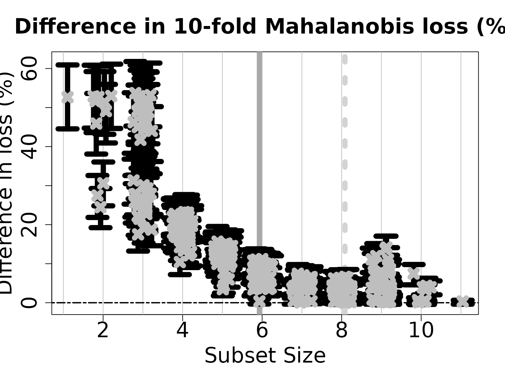
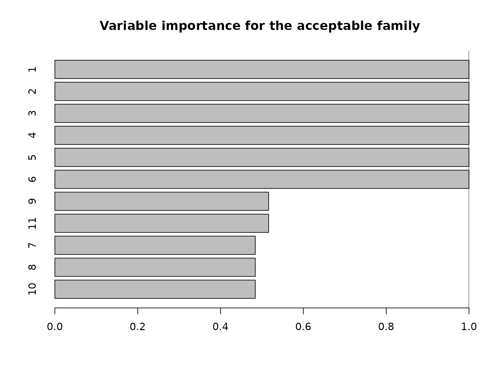
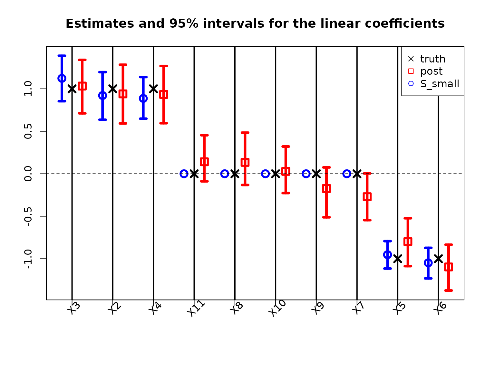

Bayesian subset selection for linear mixed models
Source:vignettes/Linear-mixed.Rmd
Linear-mixed.RmdLinear Mixed Models
Linear mixed models (LMMs) are instrumental for regression analysis with structured dependence, such as grouped, clustered, or multilevel data. However, selection among the covariates—while accounting for this structured dependence—remains a challenge.
Here, we explore the Bayesian subset selection strategies for LMMs from Kowal (2022). A central priority is to account for the structured dependence modeled by the LMM, both in the selection criteria and the performance metrics. Thus, our decision analysis uses Mahalanobis loss to measure accuracy. The weighting matrix in the Mahalanobis loss is the inverse (marginal) covariance matrix in the LMM. This quantity depends on the variances of the random effects and the errors, and thus requires careful attention for extracting optimal coefficients, providing proper uncertainty quantification, and designing scalable computations.
Random intercept model
Suppose we observe repeated measurements \(y_{ij}\), \(j=1,\ldots,m_i\) along with \(p\) covariates \(x_i\) for each individual \(i=1,\ldots,n\). The random intercept model is a LMM that seeks to capture the within-subject dependence: \[ y_{ij} = x_i'\beta + u_i + \epsilon_{ij} \] where \(u_i \sim N(0,\sigma_u^2)\) and \(\epsilon_{ij} \sim N(0, \sigma_\epsilon^2)\) are mutually independent. By design, the random intercept \(u_i\) is shared among all replicates for subject \(i\) and induces the within-subject correlation \[ corr(y_{ij}, y_{ij'}) = \sigma_u^2/(\sigma_u^2 + \sigma_\epsilon^2) \] conditional on \(x_i\) and \(\beta\).
The goal is to perform subset selection for \(x\) while accounting for these intra-subject dependencies. We do so using Mahalanobis loss, which modifies squared error loss to include a weight matrix \(\Omega\): \[ \Vert v \Vert_\Omega^2 = v'\Omega v \] For the random intercept model, the (scaled) Mahalanobis weight matrix is \[ \sigma_\epsilon^2 \Omega = \mbox{bdiag}\{I_{m_i} - (\sigma_\epsilon^2/\sigma_u^2 + m_i)^{-1} 1_{m_i}1_{m_i}' \} \] where bdiag constructs a block-diagonal matrix across \(i=1,\ldots,n\), \(I_m\) is the \(m\times m\) identity, and \(1_m\) is the \(m\times 1\) vector of ones. Clearly, this term depends on model parameters \((\sigma_\epsilon, \sigma_u)\) and requires careful consideration for efficient computing.
Computing for the random intercept model
BayesSubsets includes a highly efficient MCMC sampler
for the random intercept model via the function bayeslmm().
In particular, our algorithm jointly samples the fixed and
random effects \((\beta, \{u_i\})\)
using fast and scalable steps. This joint sampler avoids the
inefficiencies that arise from iteratively sampling full conditionals of
\(\beta\) given \(u\) and vice versa—which can be so
debilitating that it often requires alternative parametrizations (e.g.,
centered vs. noncentered) or sampling strategies (e.g., interweaving or
Stan). Our joint sampler eliminates these issues entirely, while
crucially maintaining computational scalability.
Subset selection
Like the other methods implemented in BayesSubsets, we
provide
Optimal linear coefficients for any subset of variables;
Regularization (i.e., shrinkage) for these coefficients, which is inherited from the LMM and helps guard against variance-inflation;
Uncertainty quantification for these coefficients, again leveraging the LMM;
The acceptable family of “near-optimal” subsets of linear predictors that match or nearly match the “best” (by minimum cross-validated error) subset; and
Summaries of the acceptable family, including the 1) smallest acceptable subset and 2) a variable importance metrics that computes, for each variable \(j\), the proportion of acceptable subsets in which \(j\) appears.
The key difference from the alternative subset selection strategies (e.g., Kowal 2021, 2022a) is that each of the above terms uses Mahalanobis loss to account for the structured dependence modeled by the LMM.
Getting started
We begin by installing and loading the package:
# devtools::install_github("drkowal/BayesSubsets")
library(BayesSubsets)For this example, we will consider simulated data with \(n \times p\) correlated covariates \(X\) and \(m \times n\) response matrix \(Y\), where \(m\) is the number of replicates per subject.
# To reproduce:
set.seed(123)
# Simulate some data:
dat = simulate_lm_randint(
n = 200, # number of subjects
p = 10, # number of predictors
m = 5, # number of replicates per subject
p_sig = 5, # number of true signals
SNR = 1 # signal-to-noise ratio
)
# Store the data:
Y = dat$Y; X = dat$XNext, we fit a Bayesian LMM with random intercepts. Anticipating sparsity in the regression coefficients, we specify a horseshoe prior for \(\beta\). The following function fits this model using a highly efficient MCMC sampling algorithm:
# Fit the Bayesian linear mixed model:
fit = bayeslmm(Y = Y,
X = X,
nsave = 1000, # MCMC samples to save
nburn = 1000 # initial samples to discard
)For any subset of covariates \(S\), we compute the optimal linear coefficients according to Bayesian decision analysis (Kowal, 2022). For an example subset \(S = \{1,3,10\}\) and Mahalanobis loss, the following code computes our optimal linear summary under the random intercept model:
# Example subset:
S_ex = c(1, 3, 10)
# Optimal coefficients:
get_coefs_randint(
post_y_pred = fit$post_y_pred,
XX = X[,S_ex],
post_sigma_e = fit$post_sigma_e,
post_sigma_u = fit$post_sigma_u,
post_y_pred_sum = fit$post_y_pred_sum)
#> X1 X3 X10
#> -1.2310866 1.9174218 -0.5300475
# Compare to the posterior mean for these coefficients:
coef(fit)[S_ex]
#> [1] -1.18108805 1.03223725 0.02845451Uncertainty quantification for the linear coefficients
We may also obtain posterior uncertainty quantification for the linear coefficients that are active (nonzero) in \(S\). To do so, we project the posterior predictive distribution onto \(X_S\) draw-by-draw, which induces a posterior predictive distribution for the linear coefficients under the LMM. Again, we use the Mahalanobis loss for this projection, and summarize the posterior using 95% credible intervals.
# Posterior predictive draws of *all* coefficients:
post_beta_s = proj_posterior_randint(post_y_pred = fit$post_y_pred,
XX = X,
sub_x = S_ex,
post_sigma_e = fit$post_sigma_e,
post_sigma_u = fit$post_sigma_u,
post_y_pred_sum = fit$post_y_pred_sum)
dim(post_beta_s) # the coefficients outside S_ex are fixed at zero
#> [1] 1000 11
# Compute 95% credible intervals for the nonzero entries:
t(apply(post_beta_s[,S_ex], 2,
quantile, c(0.05/2, 1 - 0.05/2)))
#> 2.5% 97.5%
#> [1,] -1.3765692 -1.0718788
#> [2,] 1.7156488 2.1201515
#> [3,] -0.7322601 -0.3374807Bayesian subset search
To this point, we have focused on point and interval (linear) summaries for an arbitrary yet fixed subset \(S\). However, we are often interested in searching across subsets and measuring the predictive performances. Here, we use the LMM output to generate a collection of “candidate subsets” using decision analysis (Kowal, 2022a).
Since we use Mahalanobis loss, we first construct a (vectorized) \(mn\)-dimensional response vector \(y^*\) and \(mn \times p\) covariate matrix \(X^*\) such that squared error loss with these quantities is equivalent to Mahalanobis loss.
# Access the "X" and "Y" matrices needed for the search:
objXY = getXY_randint(XX = X,
post_y_pred = fit$post_y_pred,
post_sigma_e = fit$post_sigma_e,
post_sigma_u = fit$post_sigma_u,
post_y_pred_sum = fit$post_y_pred_sum)
X_star = objXY$X_star; y_star = objXY$y_star; rm(objXY)For small \(p\) it may be possible
to enumerate all possible subsets. Here, we screen to the “best”
n_best = 50 models of each size according to squared error
loss. We store these in a Boolean matrix indicators: each
row is an individual subset, while the columns indicate which variables
are included (TRUE) or excluded (FALSE).
indicators = branch_and_bound(yy = y_star, # response is the fitted values
XX = X_star, # covariates
n_best = 50 # restrict to the "best" 50 subsets of each size
)
# Inspect:
indicators[1:5, 1:10]
#> X1 X2 X3 X4 X5 X6 X7 X8 X9 X10
#> force_in TRUE FALSE FALSE FALSE FALSE FALSE FALSE FALSE FALSE FALSE
#> TRUE TRUE FALSE FALSE FALSE FALSE FALSE FALSE FALSE FALSE
#> TRUE FALSE TRUE FALSE FALSE FALSE FALSE FALSE FALSE FALSE
#> TRUE FALSE FALSE TRUE FALSE FALSE FALSE FALSE FALSE FALSE
#> TRUE FALSE FALSE FALSE FALSE FALSE FALSE TRUE FALSE FALSE
# Dimensions:
dim(indicators)
#> [1] 362 11
# Summarize the model sizes:
table(rowSums(indicators)) # note: intercept always included
#>
#> 1 2 3 4 5 6 7 8 9 10 11
#> 1 10 45 50 50 50 50 50 45 10 1When \(p \gg 30\), it is recommended
to use the prescreen function, which restricts the search
to include only num_to_keep possible active variables. This
makes the branch-and-bound algorithm feasible for very large \(p\).
The acceptable family of “near-optimal” subsets
From this large collection of 362 candidate subsets, we seek to filter to the acceptable family of subsets, i.e., those “near-optimal” subsets that predict about as well as the “best” subset. These are computed based on 10-fold cross-validation, and use the out-of-sample predictive distribution from the LMM to provide uncertainty quantification for predictive accuracy.
# Compute the acceptable family:
accept_info = accept_family_randint(post_y_pred = fit$post_y_pred,
post_lpd = fit$post_lpd,
post_sigma_e = fit$post_sigma_e,
post_sigma_u = fit$post_sigma_u,
XX = X, YY = Y,
indicators = indicators,
post_y_pred_sum = fit$post_y_pred_sum)
# How many subsets are in the acceptable family?
length(accept_info$all_accept)
#> [1] 31
# These are the rows of `indicators` that belong to the acceptable family:
head(accept_info$all_accept)
#> [1] 157 207 208 209 210 211
# An example acceptable subset:
ex_accept = accept_info$all_accept[1]
which(indicators[ex_accept,])
#> X1 X2 X3 X4 X5 X6
#> 1 2 3 4 5 6The plot shows how the out-of-sample predictive performance varies across subsets of different sizes, specifically relative (% change) to the “best” subset (by minimum cross-validated error; dashed gray vertical line). The x-marks are the (usual) empirical cross-validated error, while the intervals leverage the predictive distribution from the LMM to quantify uncertainty in the out-of-sample predictive performance. While performance improves as variables are added, it is clear that several smaller subsets are highly competitive—especially when accounting for the predictive uncertainty.
Subset selection: the smallest acceptable subset
If we wish to select a single subset, a compelling representative of the acceptable family is the smallest acceptable subset. This choice favors parsimony, while its membership in the acceptable family implies that it meets a high standard for predictive accuracy. From the previous plot, we select the smallest subset for which the intervals include zero (solid gray vertical line).
# Simplest acceptable subset:
beta_hat_small = accept_info$beta_hat_small
# Which coefficients are nonzero:
S_small = which(beta_hat_small != 0)
# How many coefficients are nonzero:
length(S_small)
#> [1] 6The “best” subset by minimum cross-validation often includes many extraneous variables, which is a well-known (and undesirable) byproduct of cross-validation.
# Acceptable subset that minimizes CV error:
beta_hat_min = accept_info$beta_hat_min
# Typically much larger (and often too large...)
sum(beta_hat_min != 0)
#> [1] 8For reference, the true model size is 6.
Returning to the smallest acceptable subset, we can obtain posterior samples and credible intervals for the coefficients as before:
# Draws from the posterior predictive distribution
# Posterior predictive draws of *all* coefficients:
post_beta_small = proj_posterior_randint(post_y_pred = fit$post_y_pred,
XX = X,
sub_x = S_small,
post_sigma_e = fit$post_sigma_e,
post_sigma_u = fit$post_sigma_u,
post_y_pred_sum = fit$post_y_pred_sum)
# Compute 95% credible intervals for the nonzero entries:
t(apply(post_beta_small[,S_small], 2,
quantile, c(0.05/2, 1 - 0.05/2)))
#> 2.5% 97.5%
#> [1,] -1.3264852 -1.0235191
#> [2,] 0.6362557 1.1966796
#> [3,] 0.8541809 1.3889162
#> [4,] 0.6485005 1.1382481
#> [5,] -1.1156088 -0.7929485
#> [6,] -1.2317982 -0.8719539Variable importance from acceptable subsets
Another useful summary of the acceptable family is the variable importance, which reports, for each variable \(j\), the proportion of acceptable subsets in which \(j\) appears. We are particularly interested in distinguishing among those variables that occur in all, some, or no acceptable subsets, which provides insight about which variables are indispensable (“keystone covariates”) and which variables are part of a “predictively plausible” explanation.
# Variable importance: proportion of *acceptable subsets* in which each variable appears
vi_e = var_imp(indicators = indicators,
all_accept = accept_info$all_accept)$vi_inc
# "Keystone covariates" that appear in *all* acceptable families:
which(vi_e == 1)
#> 1 2 3 4 5 6
#> 1 2 3 4 5 6
# Irrelevant covariates that appear in *no* acceptable families:
which(vi_e == 0)
#> named integer(0)
# Visualize:
barplot(vi_e[order(vi_e, (ncol(X):1))], # order...
horiz = TRUE,
main = paste('Variable importance for the acceptable family'))
abline(v = 1)
Note that the covariates are highly correlated in this simulated example (and \(p\) is moderate), so it is reasonable to expect that many covariates are roughly interchangeable in terms of predictive accuracy.
Comparing with traditional posterior summaries
Typically, Bayesian linear regression would report the posterior expectations and 95% posterior credible intervals of the regression coefficients \(\beta\). We plot these together with the point and interval estimates for the smallest acceptable model:

The traditional model summaries are completely dense: the point estimates \(\hat \beta\) are nonzero for all covariates. By comparison, the point estimates from the smallest acceptable subset are sparse, with only 6 active coefficients. By design, the smallest acceptable subset only reports interval estimates for these active coefficients. In this example, the intervals are narrower for the smallest acceptable subset, while the traditional intervals produce large intervals even for the truly zero coefficients.
Conclusion
We have sought to demonstrate that BayesSubsets is a
useful accompaniment to Bayesian LMM regression workflow. Given a
Bayesian LMM—and specifically, a random intercept model for longitudinal
data regression—we have shown how to compute
Optimal linear summaries for any subset of covariates;
Accompanying uncertainty quantification via posterior (predictive) distributions and intervals;
Bayesian subset search using decision analysis;
The acceptable family of near-optimal subsets; and
Key summaries of the acceptable family, including the smallest acceptable subset and a variable importance metric.
Each of these quantities incorporates the structured dependence (here, due to repeated measurements) via Mahalanobis loss.
When a single subset is required and parsimony is valued, then we recommend the smallest acceptable subset. However, we caution against the overreliance on any single subset without compelling motivation. A key contribution of the acceptable family is that it identifies many competing explanations (subsets) that are nearly indistinguishable in predictive accuracy. From a purely predictive perspective, we cannot completely rule out any member of the acceptable family. Thus, we further recommend reporting the variable importance as a default, variable-specific summary of the acceptable family.